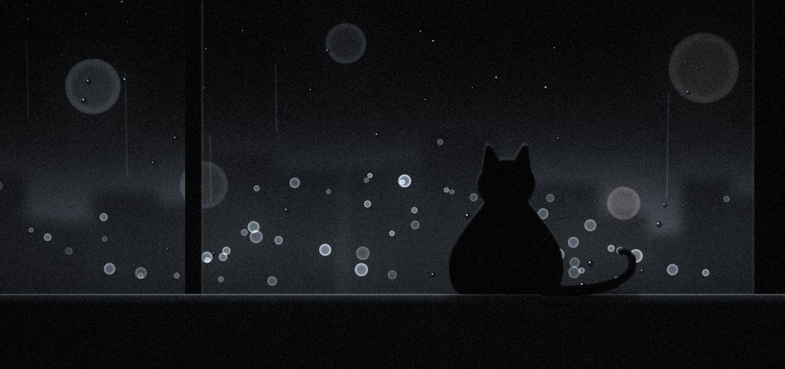

№ 07 — VISUAL DESIGNER
EST. 2017
YIHE LIN
BRANDS · BOOKS · TYPE
Visual designer. A few brands and books a year, made slowly.
No trends. No rush jobs.
Studio staff: me, and a black cat who mostly ignores me.